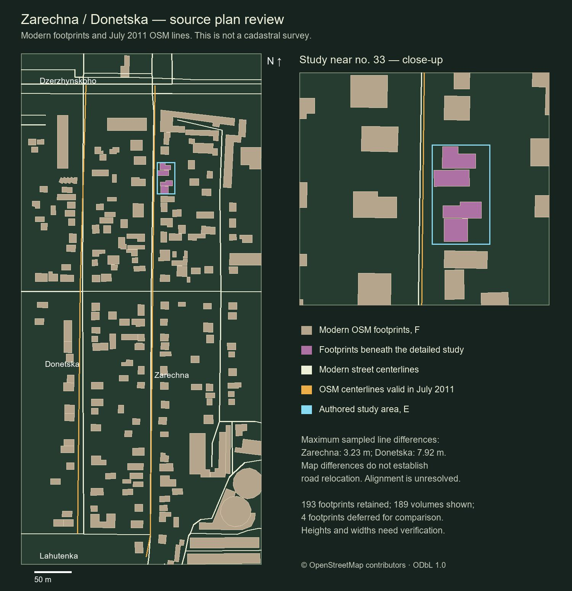
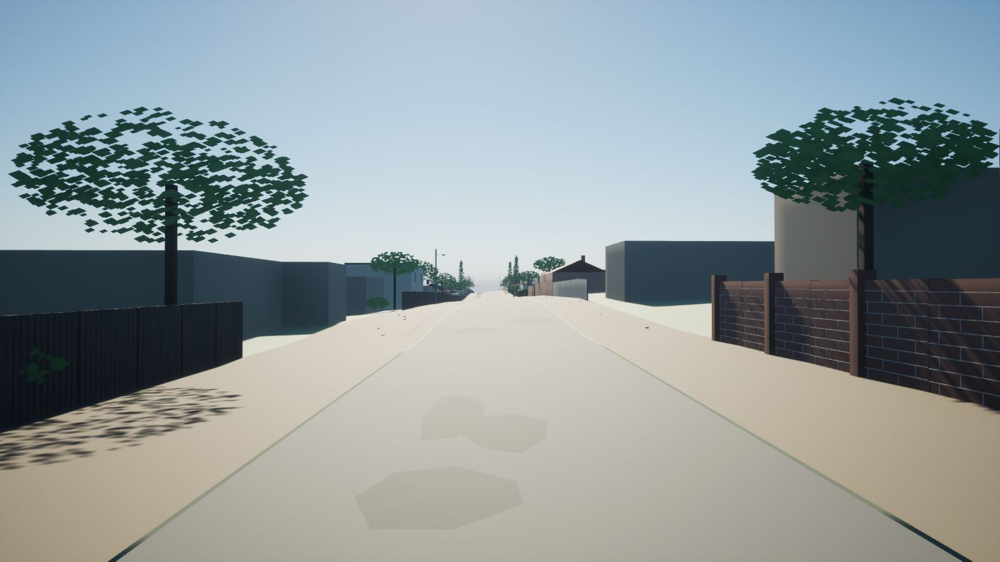
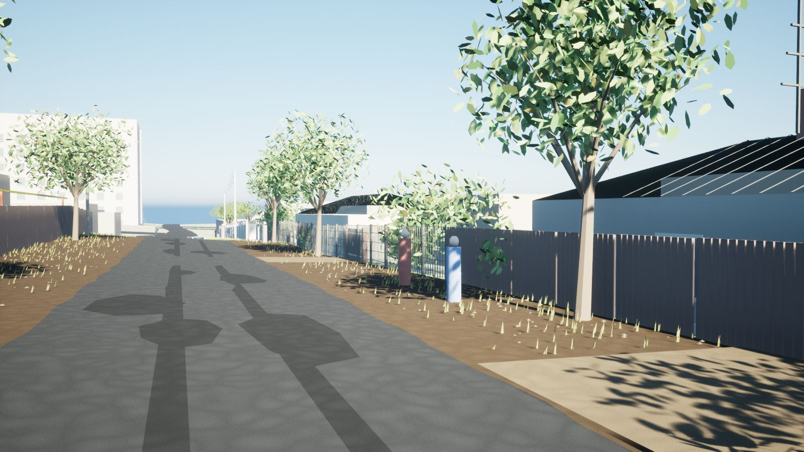
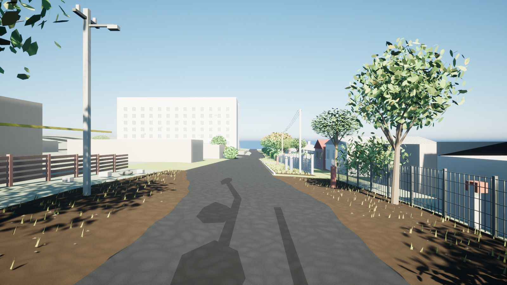
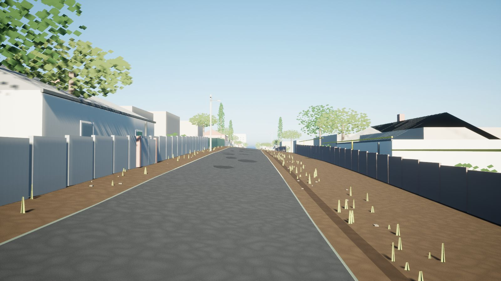
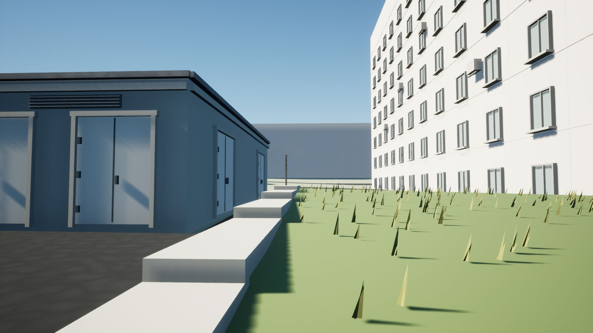

- Ничего не выдумывать. У каждой детали есть источник и класс достоверности от A до F или X.
- Реальная геометрия важнее удобства левел-дизайна.
- Снимки Google и Яндекса служат только справкой и не попадают в игру.
- Звук и музыка создаются вручную, без ИИ.
- Город растёт кольцами: Заречная, Ворошиловский район, соседние районы, весь Донецк. Сделанное не переделывается.
- Неизвестное остаётся помеченным. Оценка высоты не выдаётся за факт, а номер дома или вывеска появляются только с источником класса C и выше.
01Цель
Что я строю
Не игру по мотивам, а сам город: живой Донецк 2011 года и слой памяти поверх него. Пять опор решают, какой будет игра.
Этот проект не способ убить время. По сути, это недостающая часть меня.
Я уверен, что очень многие люди до сих пор считают этот город своим и помнят его так же, как я. Он часть их. Часть, которая существует, но физически недосягаема.
Станислав
Главная цель«Это не город по мотивам Донецка. Это Донецк».
Через 20–30 минут игры человек должен почувствовать две вещи сразу: «я в настоящем Донецке» и «это живой открытый мир, а не музей».
Слой 1
Живой Донецк 2011
Системный открытый мир: трафик, транспорт, распорядок жителей, экономика, реакция города и миссии. Бой не в центре игры. Реальная геометрия важнее удобства левел-дизайна.
Слой 2
Слой памяти
«Эхо памяти»: вспышки прошлых лет в реальных местах Заречной. Город, увиденный глазами того, кто здесь вырос.
Пять опор игры
- Жить в настоящем городеХодить, ездить на трамвае и маршрутке, покупать хлеб, сидеть на лавочке.
- Город живёт без тебяУ жителей есть дом, работа и распорядок. Дворы живут своим ритмом по времени суток и погоде.
- Свобода с последствиямиМир замечает поступки через свидетелей, репутацию и милицию и отвечает соразмерно.
- Память как открытиеРеальные места открывают воспоминания. Исследуя город, находишь личную историю.
- Маленькие человеческие ставкиСемья, друзья, соседи, работа и район. Никаких криминальных империй.
02Метод
Ничего не выдумано
У каждой детали есть класс доказательности. Если окно не видно на панораме, его нет в модели. Если размер оценён на глаз, это записано рядом с ним. Так реконструкция остаётся честной при росте до масштаба города.
Наблюдено в 2011
Видно на панораме октября 2011: материал, цвет, форма, число окон.
90 опорных объектов · 419 элементов фасадовТекущий контур
Пятна зданий и оси улиц из OpenStreetMap. Это опора для геометрии, а не доказательство состояния 2011 года.
126 контуров · снимок 22.09.2026Авторская оценка
Высоты, размеры окон, положения деревьев. Помечены в данных и заменяются, как только найден источник.
71 дерево · 847 столбиков · 106 крышНе восстанавливается
Скрытые фасады, интерьеры, ремонт асфальта, чьи позиции нельзя установить по кадру.
скрытые окна и двери не придумываютсяШкала достоверности в реестре источников
Google и Яндекс используются только как визуальная справка. Их снимки не попадают в игру.
ИсточникOSM API, SRTM3, Street View 10.2011
РеестрJSON с датой, хэшем и пределами
GISENU-метры от точки Зарічна, 33
GrayboxBlender, скрипты сборки
Проверкааудит контуров, земля, коллизии
Артматериалы и детали по наблюдениям
ДвижокUnreal Engine 5.8

Белые линии: сегодняшняя карта OSM. Оранжевые: версии той же базы, действовавшие в июле 2011 года. Расхождение доходит до 3,23 м на Заречной и 7,92 м на Донецкой. Это не доказывает, что дороги сдвинулись: могла измениться точность карты. Обе версии сохранены, пока спор не решит датированный источник.
03Движок
От прототипа к Unreal Engine 5.8
Сначала Заречную собрали в быстром Unity-прототипе. Теперь проект живёт в Unreal Engine 5.8.3 на C++, а модели остаются редактируемыми в Blender. Координаты, реестр источников и сборочные скрипты перешли без изменений. Вся ранняя история Unity и Blender сохранена в архивной ветке.
текущий движок2026 →
Unreal Engine 5.8
Основная платформа Donetsk 2011. При открытии проекта стартует играбельный квартал L_ZarechnaQuarter, по нему уже можно ходить. Системы города (жители, трафик, машины, интерьеры) обкатываются отдельно, в синтетическом тестовом районе, и не попадают в реконструкцию, пока для них нет источников.
| Версия | UE 5.8.3 · C++ · DX11 |
|---|---|
| Стартовая карта | L_ZarechnaQuarter |
| Рабочий кадр | 280 × 660 м, 189 объёмов, коридор 412 м |
| Проверки | 18 поверхностей, маршруты ≈ 564 м, 38 GIS-тестов |
| Сборка | Windows-плеер: пауза, сохранение, загрузка |
прототип завершён09.2026
Unity-прототип Заречной
Проверка метода на реальном квартале. Данные, модели Blender и выводы переносятся в Unreal.
| Сцена | квартал 400 м, коридор 210 м, 19 участков |
|---|---|
| Геометрия | 234 415 / 46 930 треугольников (LOD0 / LOD1) |
| Коллизии | 198 коллайдеров · 11 502 треугольника |
| Материалы | 20 семейств поверхностей, 10 ассетов ambientCG CC0 |
- пройдено6 маршрутов контроллера, 1 200 м, 1 002 замера земли
- пройденоАудит 126 контуров: нет пересечений и вылетов крыш
- пройденоBlender/FBX: метрика, UV, земля в 61 точке, коллизия фасадов
- пройденоТестовые сборки Windows и Android
Системы в коде · Source/Donetsk2011
CoreWorldState / SaveGISPlayerVehiclesTrafficPopulationInteractionInteriorMemoryNarrativeEnvironmentAudioUI
Данные игры лежат в JSON: миссии, диалоги, эхо памяти, жители, машины, интерьеры, магазины и вещи. Решения по архитектуре записаны в ADR-0001…0006: мир из базы данных, простая аркадная машина до Chaos, акторы до Mass, интерьеры в реальном месте.
04Блокаут
Блокаут в Unreal Engine 5.8
Рабочие кадры из редактора Unreal Engine 5.8.3: улица собирается по панорамам октября 2011 года — заборы, ворота, газовые трубы, опоры, деревья и обочины. Материалы пока простые, размеры и посадки остаются оценками класса E.
Было / стало
Один и тот же кадр из Unreal: ранний блокаут и версия после прохода по покрытиям. Асфальт, грунт обочин, трава, кусты и деревья сверены с панорамами октября 2011 года. Потяните линию.


БылоСтало







Сняты в самом Unreal 28–30 сентября 2026 года, DX11. Пиксели Google в сцену не попадают. Номера меток обозначают камеры панорам, а не участки. Посадки, панели и размеры остаются оценками класса E.
05План
Дорога к целому городу
Сейчас идёт короткий цельный маршрут внутри квартала с одним бытовым действием. Потом вертикальный срез: играбельная мини-версия финальной игры. Дальше та же технология расходится по району и городу.
06Журнал
Как рождается город
Здесь я рассказываю, как идёт работа: по каким правилам, что уже сделано и что впереди. Этот раздел обновляется вместе с проектом.
Только мои чувства. Без ИИ.
Звуковой дизайн и музыку для Donetsk 2011 я создаю сам и опираюсь только на свои чувства. Никакого искусственного интеллекта: ни генерации музыки, ни сгенерированных звуков.
Только оригинальные эксперименты. Каждый звук и каждая мелодия должны быть прожиты, а не сгенерированы.
Звуковой дневник
Полка пока пустая
Сюда лягут мои первые звуковые наброски для Donetsk 2011. У каждой записи будет дата и пара слов о том, что я чувствовал, когда её делал. Без ИИ.
- 01скоро
- 02скоро
- 03скоро
Журнал разработки
- Снимок OpenStreetMap: 8 508 элементов, эталонная карта центра 4,37 × 2,84 км.
- Точка отсчёта подтверждена: Зарічна, 33, 47.9927461 N, 37.8183736 E.
- Панорамы Street View октября 2011 пройдены по Заречной в обе стороны. Аудит 126 контуров прошёл без пересечений.
- Unity-прототип: 6 маршрутов на 1 200 м, 1 002 замера земли, тестовые сборки Windows и Android.
- Переход на Unreal Engine 5.8.3: сборка Development Editor прошла, игра запустилась на DX11. Решение DEC-0001: начинаю First Playable, исследование идёт параллельно.
- Первый Windows-плеер с меню паузы, сохранением и загрузкой. Этюд фасада 54 м у дома 33 и восемь кадров прямо из Unreal.
- Запущен сайт проекта на четырёх языках.
- Рабочий квартал Заречной и Донецкой 280 × 660 м: 189 объёмов, рельеф SRTM и непрерывный коридор 412 м по шести панорамам октября 2011. Пройдены 18 проверок поверхностей, маршруты ≈ 564 м вдоль каждой улицы и 38 GIS-тестов.
- Сверка OSM 2012 года с сегодняшней картой: 91 кандидат, 18 проверено. Ни один не попал в канон 2011 года без датированных снимков.
- На сайте появились 3D-квартал с режимом доказательств, прогулка по Заречной, игра «Угадай место» и полка звукового дневника.
- Север квартала: подпорная стенка с газоном и елями, окна торца, служебный двор без лишней пристройки. Первые 67 м улицы получили деревья, кусты, грунтовые обочины и раздельные покрытия.
- Северная дорога и ворота дома 33 сверены с панорамами октября 2011: посадки у восточной обочины, фигурные бетонные панели, профлист переходит в кирпич у метки 27. DX11: 27 проверок поверхностей, 3 маршрута, 22 кадра.
- Сайт: рендеры квартала с солнцем октября и тенями, фотоархив из 22 снимков с фильтрами и просмотром, прогулка по 3D-модели и новая структура страниц.
07Источники
Реестр источников
OpenStreetMap. Контуры зданий, дороги, рельсы, вода. © участники OpenStreetMap, ODbL 1.0. Снимок карты 13.09.2026, квартала 22.09.2026. openstreetmap.org/copyright
SRTM3 v2.1, лист N47E037. Съёмка 11–22.02.2000, EGM96, зеркало Kurviger архива USGS. SHA-256 3c78466e…6d58. USGS EROS
Google Street View, октябрь 2011. 8 панорам Заречной, только визуальные наблюдения. Изображения Google не хранятся и не распространяются.
Королевская башня. Краеведческая статья от 16.08.2012 подтверждает завершение до 2011 года. donjetsk.com
ambientCG. 10 CC0-материалов для 16 привязок поверхностей. Лицензия
Wikimedia Commons. 22 фотографии Донецка 2008–2013 годов в фотоархиве и игре «Угадай место». Автор и лицензия указаны у каждого снимка.